Kadenz, propositions du 2026-11-18
Toute l'application, pas seulement les écrans de premier lancement
Libellés de l'application ; lignes de facture : données d'exemple
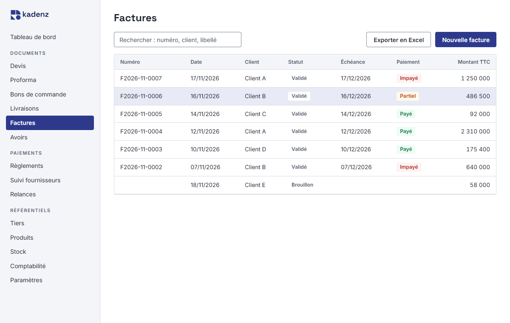
Gris neutres, sans teinte ; Ambre pour l'action.
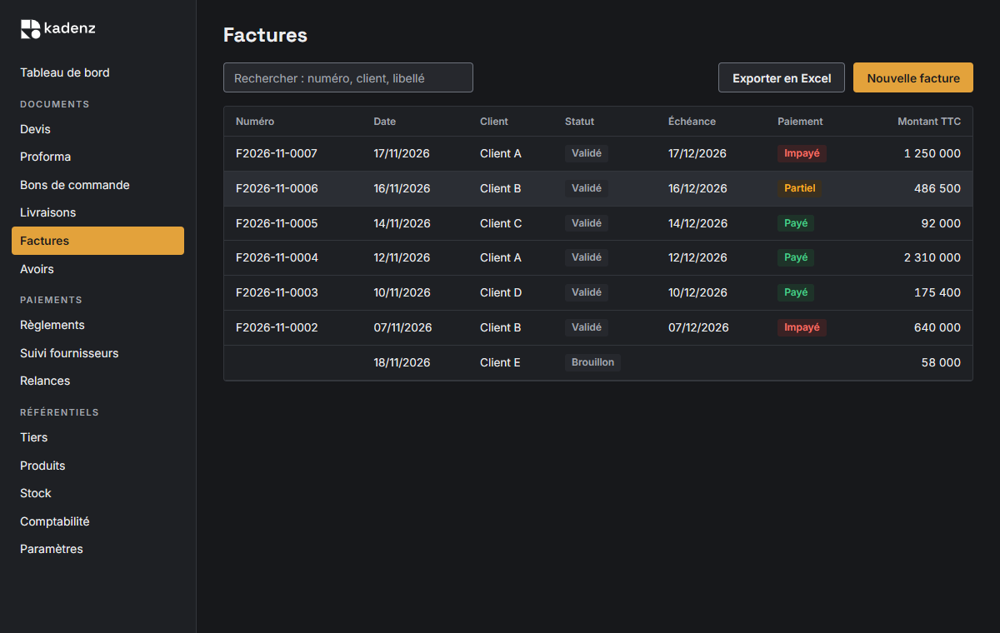
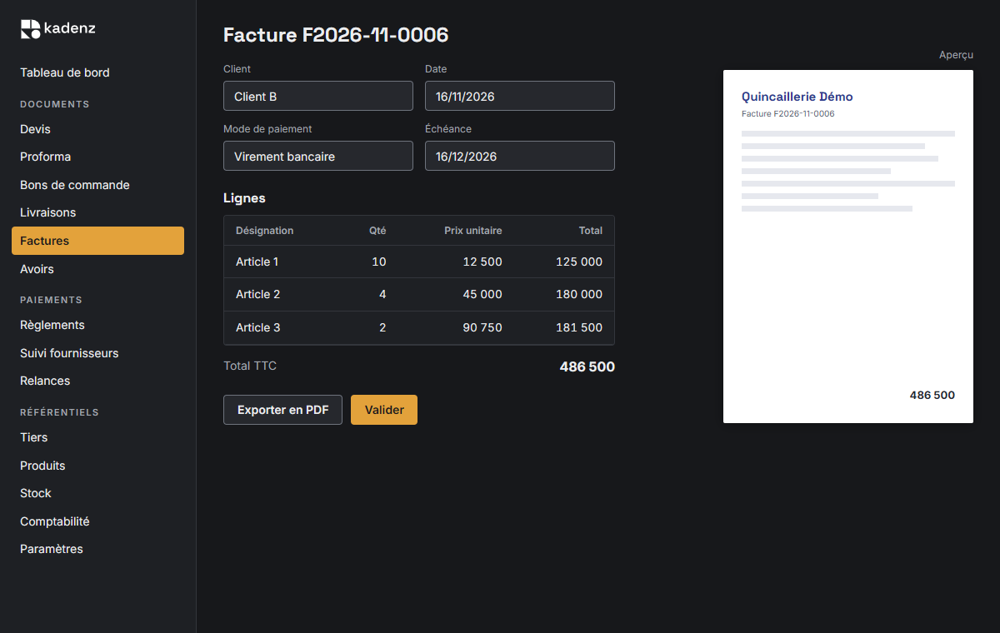
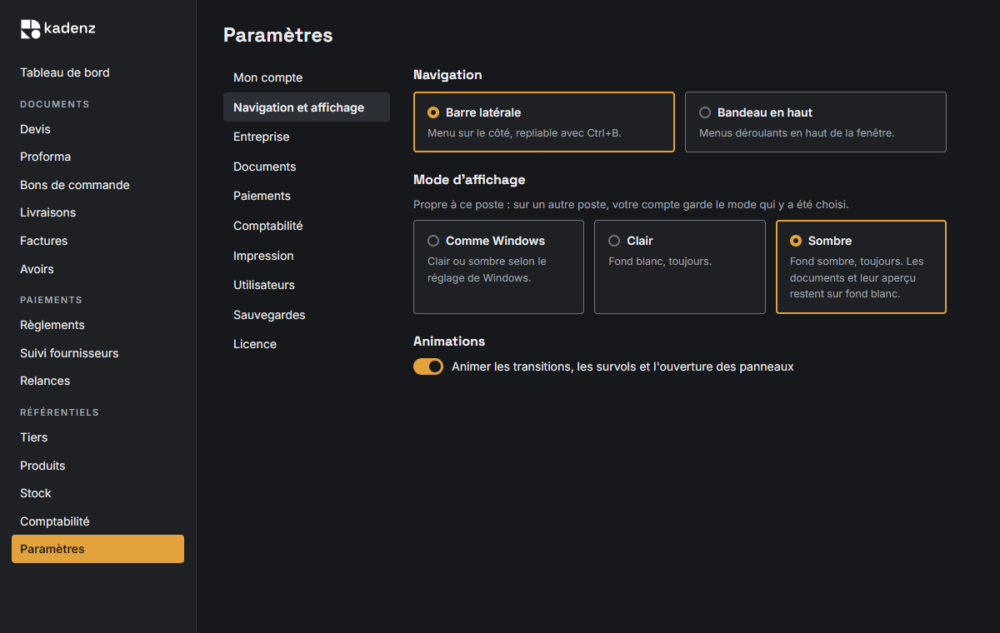
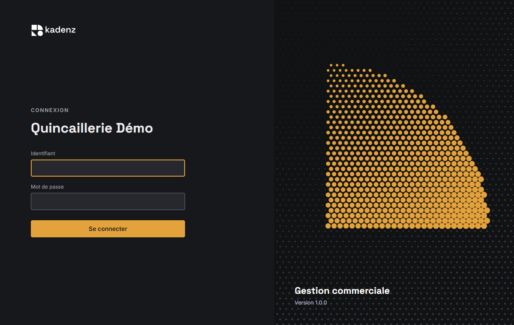
| Jeton | Clair | Sombre |
|---|---|---|
| fond | #FFFFFF | #17181B |
| fond-lateral (navigation, en-têtes) | #F4F5F9 | #1E2024 |
| surface (cartes, tableaux) | #FFFFFF | #1E2024 |
| champ | #FFFFFF | #26282D |
| bordure (séparateurs) | #D9DCE3 | #33363C |
| bordure-champ | #7B8794 | #6E737D |
| texte | #1F2933 | #ECEDEF |
| texte-secondaire | #52606D | #A3A8B0 |
| accent (bouton principal, sélection) | #2D3A8C | #E3A23B |
| texte-sur-accent | #FFFFFF | #17181B |
| accent-survol (ligne choisie) | #E8EAF6 | #2B2E34 |
| nuit (panneau de marque) | #1A2259 | #111214 |
| erreur / fond-erreur | #B42318 | #F97066 / #3A2224 |
| attente / fond-attente | #B54708 | #FDB022 / #3A3020 |
| succes / fond-succes | #067647 | #47CD89 / #1E3329 |
| Contraste | Rapport | Seuil atteint |
|---|---|---|
| texte sur fond | 15.2 : 1 | oui |
| texte sur surface | 13.9 : 1 | oui |
| texte secondaire sur fond | 7.4 : 1 | oui |
| texte secondaire sur champ | 6.2 : 1 | oui |
| texte du bouton principal | 8.0 : 1 | oui |
| contour de champ sur fond (3 : 1) | 3.7 : 1 | oui |
| contour de champ sur champ (3 : 1) | 3.1 : 1 | oui |
| erreur sur son fond | 5.3 : 1 | oui |
| attente sur son fond | 7.0 : 1 | oui |
| succes sur son fond | 6.6 : 1 | oui |
| texte sur ligne choisie | 11.6 : 1 | oui |
Gris un peu froids, tirés d'Encre et d'Ardoise (charte) ; Indigo éclairci pour l'action.
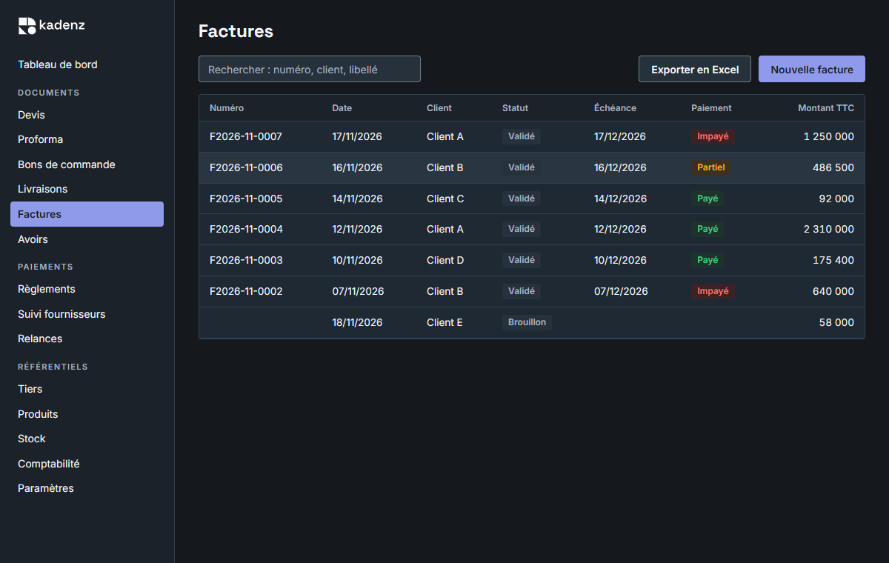
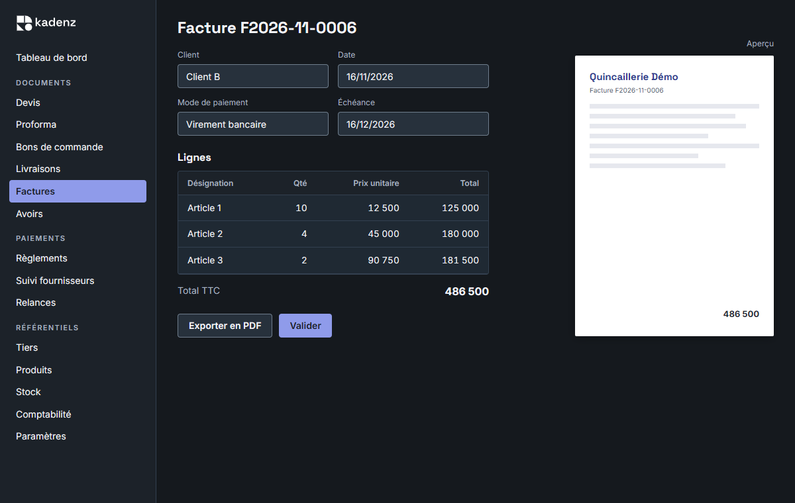
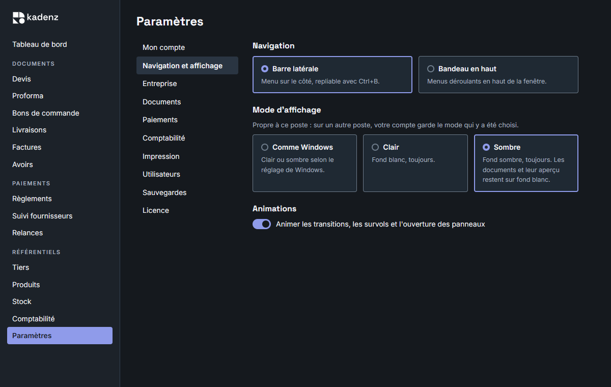
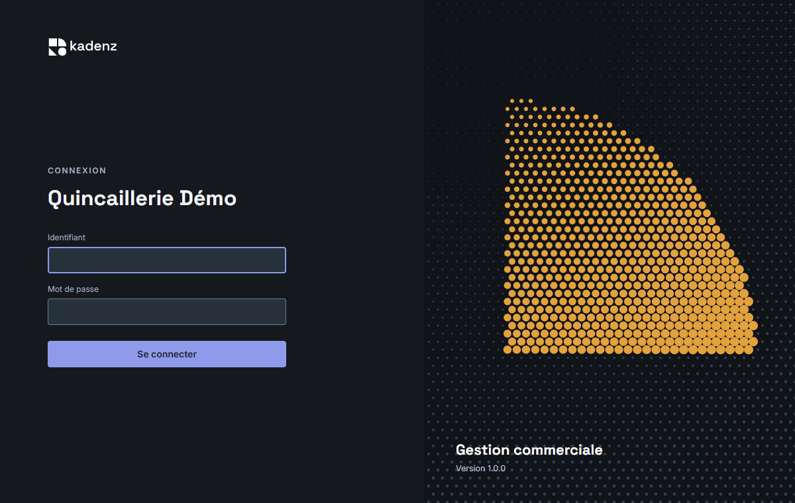
| Jeton | Clair | Sombre |
|---|---|---|
| fond | #FFFFFF | #15191E |
| fond-lateral (navigation, en-têtes) | #F4F5F9 | #1C2229 |
| surface (cartes, tableaux) | #FFFFFF | #1F2933 |
| champ | #FFFFFF | #27313C |
| bordure (séparateurs) | #D9DCE3 | #334050 |
| bordure-champ | #7B8794 | #6F7D8C |
| texte | #1F2933 | #F4F5F9 |
| texte-secondaire | #52606D | #A9B4C0 |
| accent (bouton principal, sélection) | #2D3A8C | #8F9BEA |
| texte-sur-accent | #FFFFFF | #15191E |
| accent-survol (ligne choisie) | #E8EAF6 | #2A3542 |
| nuit (panneau de marque) | #1A2259 | #101317 |
| erreur / fond-erreur | #B42318 | #F97066 / #3A2226 |
| attente / fond-attente | #B54708 | #FDB022 / #3A3122 |
| succes / fond-succes | #067647 | #47CD89 / #1D332B |
| Contraste | Rapport | Seuil atteint |
|---|---|---|
| texte sur fond | 16.2 : 1 | oui |
| texte sur surface | 13.5 : 1 | oui |
| texte secondaire sur fond | 8.4 : 1 | oui |
| texte secondaire sur champ | 6.3 : 1 | oui |
| texte du bouton principal | 6.8 : 1 | oui |
| contour de champ sur fond (3 : 1) | 4.2 : 1 | oui |
| contour de champ sur champ (3 : 1) | 3.1 : 1 | oui |
| erreur sur son fond | 5.2 : 1 | oui |
| attente sur son fond | 6.9 : 1 | oui |
| succes sur son fond | 6.6 : 1 | oui |
| texte sur ligne choisie | 11.4 : 1 | oui |
Gris légèrement chauds ; Ambre pour l'action.
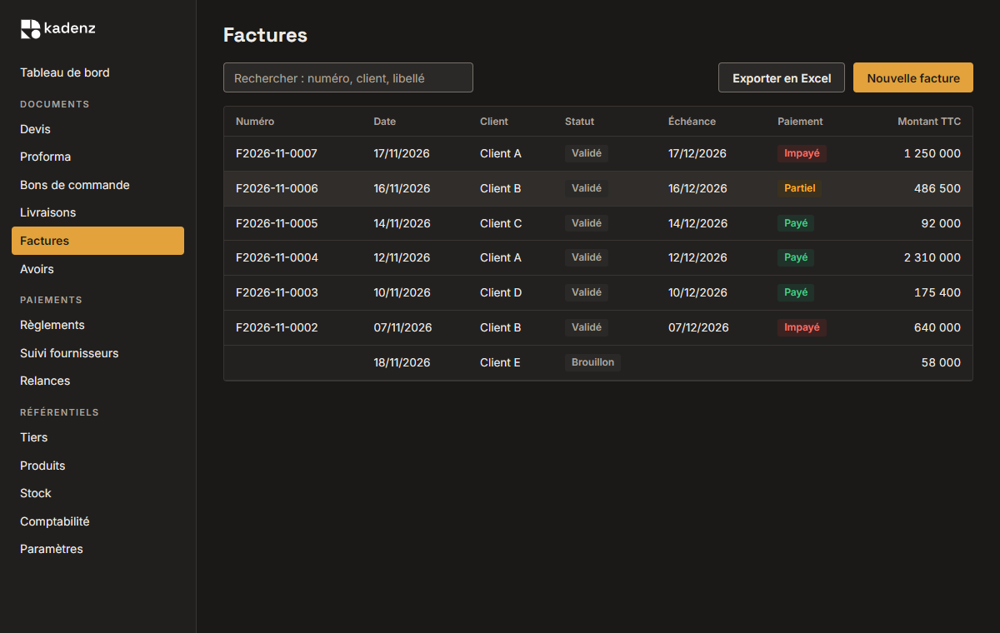
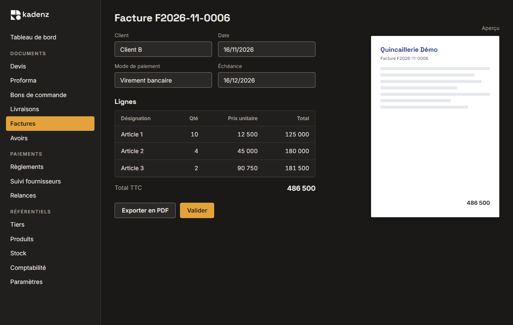
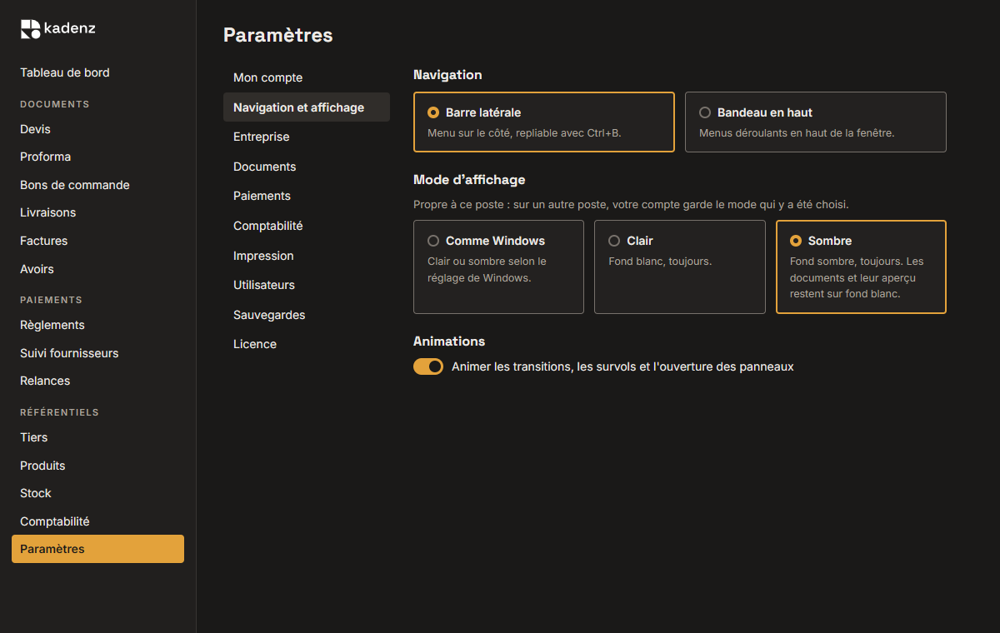
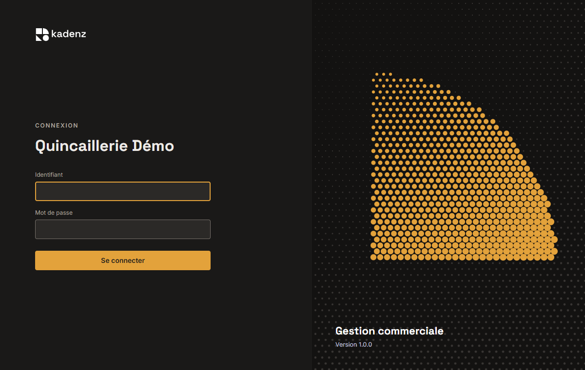
| Jeton | Clair | Sombre |
|---|---|---|
| fond | #FFFFFF | #1A1918 |
| fond-lateral (navigation, en-têtes) | #F4F5F9 | #211F1E |
| surface (cartes, tableaux) | #FFFFFF | #232120 |
| champ | #FFFFFF | #2B2927 |
| bordure (séparateurs) | #D9DCE3 | #383533 |
| bordure-champ | #7B8794 | #77716B |
| texte | #1F2933 | #EEEBE7 |
| texte-secondaire | #52606D | #ADA69F |
| accent (bouton principal, sélection) | #2D3A8C | #E3A23B |
| texte-sur-accent | #FFFFFF | #1A1918 |
| accent-survol (ligne choisie) | #E8EAF6 | #302D2A |
| nuit (panneau de marque) | #1A2259 | #131211 |
| erreur / fond-erreur | #B42318 | #F97066 / #3B2322 |
| attente / fond-attente | #B54708 | #FDB022 / #3B311F |
| succes / fond-succes | #067647 | #47CD89 / #20322A |
| Contraste | Rapport | Seuil atteint |
|---|---|---|
| texte sur fond | 14.8 : 1 | oui |
| texte sur surface | 13.5 : 1 | oui |
| texte secondaire sur fond | 7.3 : 1 | oui |
| texte secondaire sur champ | 6.0 : 1 | oui |
| texte du bouton principal | 7.9 : 1 | oui |
| contour de champ sur fond (3 : 1) | 3.6 : 1 | oui |
| contour de champ sur champ (3 : 1) | 3.0 : 1 | oui |
| erreur sur son fond | 5.2 : 1 | oui |
| attente sur son fond | 6.9 : 1 | oui |
| succes sur son fond | 6.7 : 1 | oui |
| texte sur ligne choisie | 11.5 : 1 | oui |